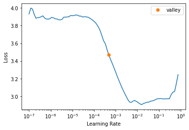
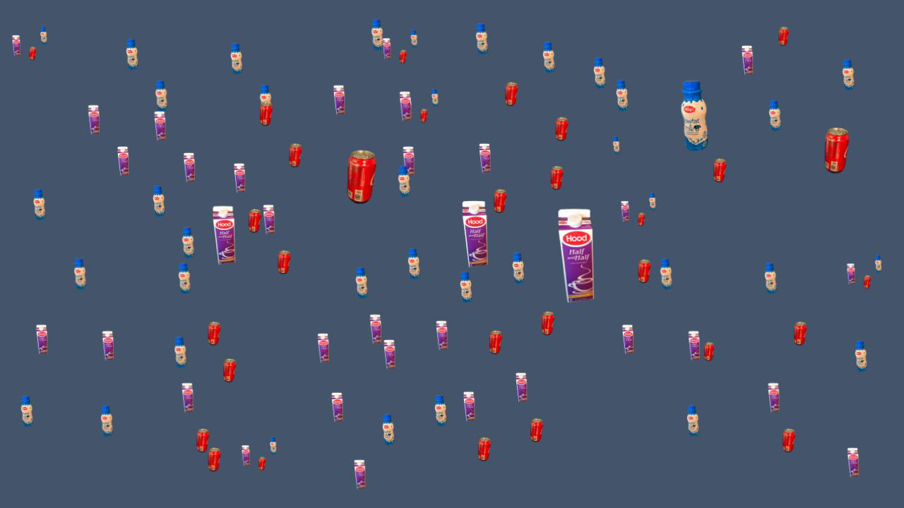

IceVision + SAHI: addressing low performance in small object detection
This notebook showcases the newly added IceVision + SAHI integration.
You can find more detailed info about this work in this blog post.
Installing Icevision and dependencies + SAHI
Install from pypi...
# # Torch - Torchvision - IceVision - IceData - MMDetection - YOLOv5 - EfficientDet Installation
# !wget https://raw.githubusercontent.com/airctic/icevision/master/icevision_install.sh
# # Choose your installation target: cuda11 or cuda10 or cpu
# !bash icevision_install.sh cuda11
... or from icevision master
# Torch - Torchvision - IceVision - IceData - MMDetection - YOLOv5 - EfficientDet Installation
!wget https://raw.githubusercontent.com/airctic/icevision/master/icevision_install.sh
# Choose your installation target: cuda11 or cuda10 or cpu
!bash icevision_install.sh cuda11 master
Install SAHI
!pip install sahi -q
# Restart kernel after installation
import IPython
IPython.Application.instance().kernel.do_shutdown(True)
Imports
from icevision.all import *
[1m[1mINFO [0m[1m[0m - [1mDownloading default `.ttf` font file - SpaceGrotesk-Medium.ttf from https://raw.githubusercontent.com/airctic/storage/master/SpaceGrotesk-Medium.ttf to /root/.icevision/fonts/SpaceGrotesk-Medium.ttf[0m | [36micevision.visualize.utils[0m:[36mget_default_font[0m:[36m70[0m
[1m[1mINFO [0m[1m[0m - [1mDownloading mmdet configs[0m | [36micevision.models.mmdet.download_configs[0m:[36mdownload_mmdet_configs[0m:[36m31[0m
0B [00:00, ?B/s]
Downloading https://ultralytics.com/assets/Arial.ttf to /root/.config/Ultralytics/Arial.ttf...
Loading the Fridge dataset
url = "https://cvbp-secondary.z19.web.core.windows.net/datasets/object_detection/odFridgeObjects.zip"
dest_dir = "fridge"
data_dir = icedata.load_data(url, dest_dir)
parser = parsers.VOCBBoxParser(annotations_dir=data_dir / "odFridgeObjects/annotations", images_dir=data_dir / "odFridgeObjects/images")
train_records, valid_records = parser.parse()
0%| | 0/20380998 [00:00<?, ?B/s]
0%| | 0/128 [00:00<?, ?it/s]
[1m[1mINFO [0m[1m[0m - [1m[34m[1mAutofixing records[0m[1m[34m[0m[1m[0m | [36micevision.parsers.parser[0m:[36mparse[0m:[36m122[0m
0%| | 0/128 [00:00<?, ?it/s]
Defining augmentations and datasets
image_size = 384
train_tfms = tfms.A.Adapter([*tfms.A.aug_tfms(size=(image_size, image_size), presize=512), tfms.A.Normalize()])
valid_tfms = tfms.A.Adapter([*tfms.A.resize_and_pad((image_size, image_size)), tfms.A.Normalize()])
train_ds = Dataset(train_records, train_tfms)
valid_ds = Dataset(valid_records, valid_tfms)
Choosing model
# Just change the value of selection to try another model
selection = 0
extra_args = {}
if selection == 0:
model_type = models.mmdet.vfnet
backbone = model_type.backbones.resnet50_fpn_mstrain_2x
#model_type = models.mmdet.faster_rcnn
#backbone = model_type.backbones.resnet50_fpn_1x
#model_type = models.mmdet.retinanet
#backbone = model_type.backbones.resnet50_fpn_1x
#model_type = models.mmdet.ssd
#backbone = model_type.backbones.ssd512
elif selection == 1:
# The Retinanet model is also implemented in the torchvision library
model_type = models.torchvision.faster_rcnn
backbone = model_type.backbones.resnet50_fpn
elif selection == 2:
model_type = models.ross.efficientdet
backbone = model_type.backbones.tf_lite1
# The efficientdet model requires an img_size parameter
extra_args['img_size'] = image_size
elif selection == 3:
model_type = models.ultralytics.yolov5
backbone = model_type.backbones.medium
# The yolov5 model requires an img_size parameter
extra_args['img_size'] = image_size
print(model_type, backbone, extra_args)
model = model_type.model(backbone=backbone(pretrained=True), num_classes=len(parser.class_map), **extra_args)
Getting dataloaders, defining metrics and instantiate fastai learner
train_dl = model_type.train_dl(train_ds, batch_size=16, num_workers=8, shuffle=True)
valid_dl = model_type.valid_dl(valid_ds, batch_size=16, num_workers=8, shuffle=False)
metrics = [COCOMetric(metric_type=COCOMetricType.bbox)]
learn = model_type.fastai.learner(dls=[train_dl, valid_dl], model=model, metrics=metrics)
/usr/local/lib/python3.7/dist-packages/torch/utils/data/dataloader.py:481: UserWarning: This DataLoader will create 8 worker processes in total. Our suggested max number of worker in current system is 2, which is smaller than what this DataLoader is going to create. Please be aware that excessive worker creation might get DataLoader running slow or even freeze, lower the worker number to avoid potential slowness/freeze if necessary.
cpuset_checked))
Finding best learning rate
learn.lr_find()
/usr/local/lib/python3.7/dist-packages/torch/functional.py:445: UserWarning: torch.meshgrid: in an upcoming release, it will be required to pass the indexing argument. (Triggered internally at ../aten/src/ATen/native/TensorShape.cpp:2157.)
return _VF.meshgrid(tensors, **kwargs) # type: ignore[attr-defined]
/usr/local/lib/python3.7/dist-packages/mmdet/core/anchor/anchor_generator.py:324: UserWarning: ``grid_anchors`` would be deprecated soon. Please use ``grid_priors``
warnings.warn('``grid_anchors`` would be deprecated soon. '
/usr/local/lib/python3.7/dist-packages/mmdet/core/anchor/anchor_generator.py:361: UserWarning: ``single_level_grid_anchors`` would be deprecated soon. Please use ``single_level_grid_priors``
'``single_level_grid_anchors`` would be deprecated soon. '
SuggestedLRs(valley=0.0004786300996784121)

Training the model
learn.fine_tune(20, 3e-4, freeze_epochs=1)
| epoch | train_loss | valid_loss | COCOMetric | time |
|---|---|---|---|---|
| 0 | 3.809848 | 3.245110 | 0.219802 | 00:22 |
/usr/local/lib/python3.7/dist-packages/mmdet/core/anchor/anchor_generator.py:324: UserWarning: ``grid_anchors`` would be deprecated soon. Please use ``grid_priors``
warnings.warn('``grid_anchors`` would be deprecated soon. '
/usr/local/lib/python3.7/dist-packages/mmdet/core/anchor/anchor_generator.py:361: UserWarning: ``single_level_grid_anchors`` would be deprecated soon. Please use ``single_level_grid_priors``
'``single_level_grid_anchors`` would be deprecated soon. '
| epoch | train_loss | valid_loss | COCOMetric | time |
|---|---|---|---|---|
| 0 | 2.858475 | 2.487748 | 0.435076 | 00:24 |
| 1 | 2.506602 | 1.631549 | 0.439791 | 00:19 |
| 2 | 2.196014 | 1.348319 | 0.443677 | 00:19 |
| 3 | 1.966267 | 1.245886 | 0.692616 | 00:19 |
| 4 | 1.783822 | 1.063900 | 0.778038 | 00:19 |
| 5 | 1.637959 | 0.931765 | 0.855932 | 00:19 |
| 6 | 1.499139 | 0.803554 | 0.919840 | 00:19 |
| 7 | 1.391289 | 0.777090 | 0.922477 | 00:19 |
| 8 | 1.303855 | 0.758904 | 0.918359 | 00:19 |
| 9 | 1.213133 | 0.675470 | 0.942594 | 00:19 |
| 10 | 1.139793 | 0.716553 | 0.924616 | 00:19 |
| 11 | 1.084275 | 0.671022 | 0.935786 | 00:19 |
| 12 | 1.037781 | 0.623612 | 0.948895 | 00:19 |
| 13 | 0.991282 | 0.619961 | 0.960125 | 00:19 |
| 14 | 0.950265 | 0.616058 | 0.961337 | 00:19 |
| 15 | 0.918986 | 0.610729 | 0.958616 | 00:19 |
| 16 | 0.886407 | 0.608031 | 0.955717 | 00:19 |
| 17 | 0.858739 | 0.600173 | 0.956490 | 00:19 |
| 18 | 0.835620 | 0.598794 | 0.954467 | 00:19 |
| 19 | 0.810680 | 0.598279 | 0.956181 | 00:19 |
Downloading sample image
!wget --no-check-certificate -O small_fridge.jpg 'https://docs.google.com/uc?export=download&id=16cq_RmKLuXLGXXiDwdyWcE-0HpyYU1kS'
--2021-11-30 18:12:37-- https://docs.google.com/uc?export=download&id=16cq_RmKLuXLGXXiDwdyWcE-0HpyYU1kS
Resolving docs.google.com (docs.google.com)... 172.217.214.101, 172.217.214.113, 172.217.214.139, ...
Connecting to docs.google.com (docs.google.com)|172.217.214.101|:443... connected.
HTTP request sent, awaiting response... 302 Moved Temporarily
Location: https://doc-0k-c0-docs.googleusercontent.com/docs/securesc/ha0ro937gcuc7l7deffksulhg5h7mbp1/tt3td2mcu62ih3vqc4ummb85jq526859/1638295950000/14481291337477770344/*/16cq_RmKLuXLGXXiDwdyWcE-0HpyYU1kS?e=download [following]
Warning: wildcards not supported in HTTP.
--2021-11-30 18:12:37-- https://doc-0k-c0-docs.googleusercontent.com/docs/securesc/ha0ro937gcuc7l7deffksulhg5h7mbp1/tt3td2mcu62ih3vqc4ummb85jq526859/1638295950000/14481291337477770344/*/16cq_RmKLuXLGXXiDwdyWcE-0HpyYU1kS?e=download
Resolving doc-0k-c0-docs.googleusercontent.com (doc-0k-c0-docs.googleusercontent.com)... 142.250.159.132, 2607:f8b0:4001:c58::84
Connecting to doc-0k-c0-docs.googleusercontent.com (doc-0k-c0-docs.googleusercontent.com)|142.250.159.132|:443... connected.
HTTP request sent, awaiting response... 200 OK
Length: 48117 (47K) [image/jpeg]
Saving to: ‘small_fridge.jpg’
small_fridge.jpg 100%[===================>] 46.99K --.-KB/s in 0.001s
2021-11-30 18:12:37 (91.5 MB/s) - ‘small_fridge.jpg’ saved [48117/48117]
PIL.Image.open("small_fridge.jpg").resize((500, 300))

Running inference without SAHI
No bbox detected!
img = PIL.Image.open("small_fridge.jpg")
pred_dict = model_type.end2end_detect(img, valid_tfms, model, class_map=parser.class_map, detection_threshold=0.4)
pred_dict['img']

Running inference with SAHI
Check out how almost all objects (too small for a one-shot prediction) are detected using the sliding window approach SAHI offers.
from icevision.models.inference_sahi import IceSahiModel
sahimodel = IceSahiModel(model_type=model_type, model=model, class_map=parser.class_map, tfms=valid_tfms, confidence_threshold=0.4)
pred = sahimodel.get_sliced_prediction(
"small_fridge.jpg",
keep_sahi_format=False,
return_img=True,
slice_height = 128,
slice_width = 128,
overlap_height_ratio = 0.2,
overlap_width_ratio = 0.2,
)
pred["img"]
Number of slices: 91